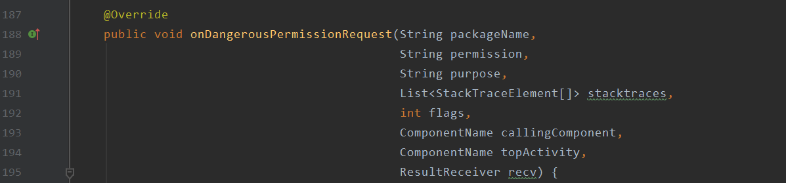
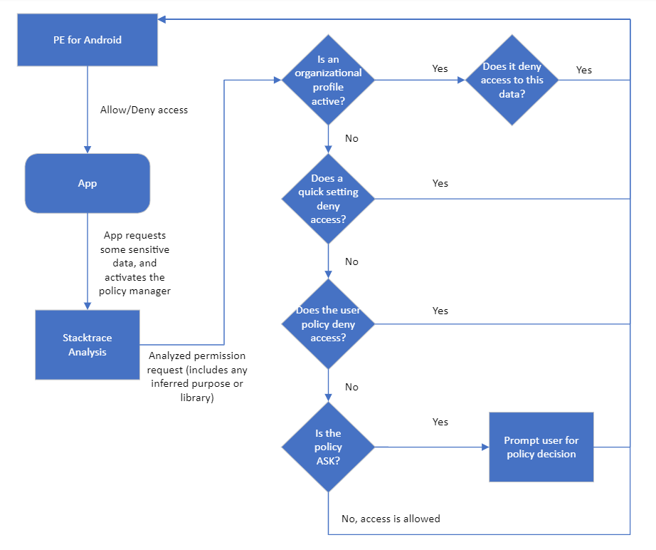

Carnegie Mellon University’s policy enforcement algorithm will enforce policies once it is selected as the policy manager to use on your device. The policy manager will be activated by PE for Android every time an app requests sensitive data, through a mechanism provided by PE for Android called onDangerousPermissionRequest.

The policy manager is given the name of the app, the permission it is requesting, a purpose (if it was set programmatically) for data access, stacktraces and foreground activities. The policy manager will analyze stacktraces (which is an in-order list of code that caused the permission request) to attempt to infer a purpose. Once it inferred a purpose (if any could be determined), it begins the actual policy enforcement process, which the diagram below shows:
